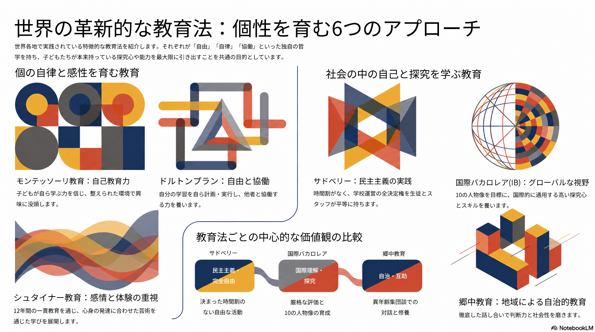
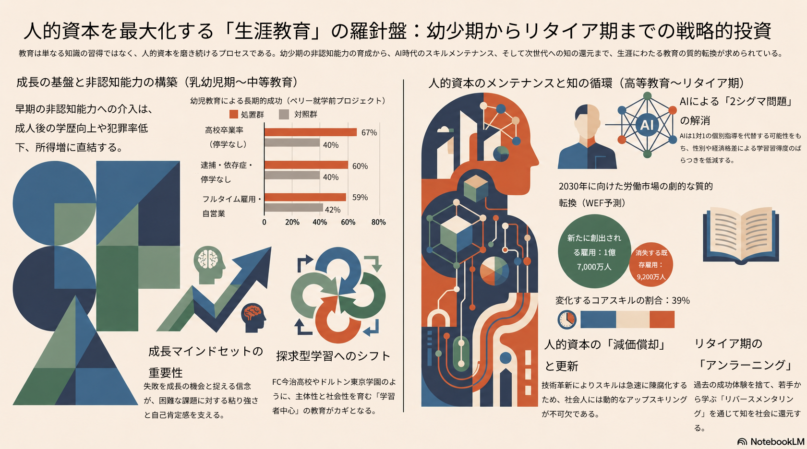

大義ある未来のための教育とはいかなるものを指すのかについて述べていく。
生得の才能、両親の資産、地域など、偶然に
よって生じてしまう個々人の差を諦観することなくすべての人が幸福を訴求
するためにどのような教育をすべきなのかをライフステージごとに提案する。
なぜ今、教育を問うのか
大義ある未来の議論のなかで各グループに通底するテーマの一つに教育があげられる。実 際、“環境、エネルギー、食料”のグループにおいては、教育機関による食育、倫理教育、 技術リテラシーの普及が必須であると指摘している。“経済、金融、資本主義”をテーマと するグループにおいては“平等に教育が受けられ格差が是正され幸福を感じられる世界”を 大義ある未来にあげ、“製造、工業、ものづくり”のグループにおいては、最低限の衣食 住、教育、医療、環境が実現される世界を、“医療、保健、ヘルスケア”は医療教育、医療 リテラシー教育を進めるなど倫理面、技術面、格差問題など様々な問題を解決するであろ うテーマとして教育が挙げられ続けてきた。
多様な教育メソッドの理念と特徴
一方的に知識を教え込むのではなく、「子ども自らが学ぶ力」を信じ、主体性や社会性、探究心を育むという姿勢。 特に、他者との対話や協働を通じて問題解決を図る姿勢や、自らの学習を振り返る内省のプロセスが重要視されています

生涯教育と人的資本の最大化
各ライフステージにおける学びの転換。 就学前・初等教育: 早期の非認知能力（自制心、忍耐力等）の育成。 中等教育: 知識の座学と実践をブリッジする探究学習の重要性。 高等教育: 講義中心の知識伝達型からアクティブ・ラーニングへの質的転換。 社会人教育：人的資本のメンテナンス。 リタイア期：「知の循環」
